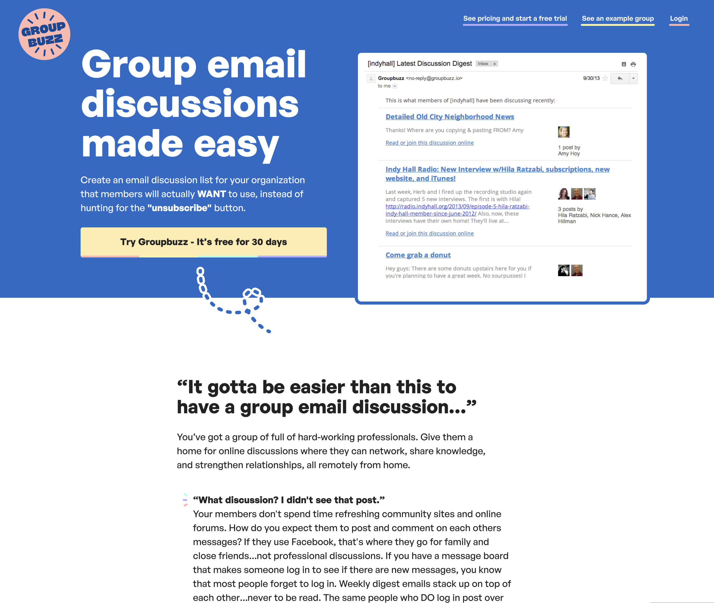

thanks for reviewing my work. i’ve been fortunate to work on some fun design projects recently that i’m happy to share today.
↓
this is a marketing website i worked on just last week. the app excels at organizing email discussions but is currently positioned as a community forum app. it has has struggled to gain traction so i thought it needed a facelift.

after spending a few hours exploring a rebrand and new positioning for the site, i targeted a new use case: group email discussions. i thought this use case could unlock a broader market for the app and highlight its best features.

my training program was generating good results for students, but based on customer surveys some students struggled with keeping track of their progress and refering back to material.
after spending two days redesigning the course interface (built on wordpress) i shipped a new version desigend to increase the perceived value of the material and make it easier to refer back to specific lessons and worksheets.
this is a community forum app concept that i designed a few months ago. it was a "scratch your own itch" idea that i've always wanted to build. it allows you to build your own reddit / hacker news style community for your niche in a few minutes. i designed and coded the product's front-end views from scratch in rails. the app is now working and in use on my website.
this was an email support app that originally launched in 2008 but was shutdown due to technical issues. the old app had a great design but it’s codebase was no longer usable.
after spending about a month recreating charm’s design from scratch, we had a working prototype. my goal was to keep the original design's overall feel while updating certain elements that looked dated. i worked with a single developer to build this working protoype.
since everything so far has been really high-level, i thought i'd close with a closer look at a specific design problem that i worked on during the month we updated charm…
the previous version of the app had a fun and distinctive navigation system but presented some usability problems:
- using these button/tabs was confusing because you expected a button labeled "Process" to actually process something when clicked. it instead takes you to the process page.
- it also doesn't indicate where you were inside the app very well. the triangle indicator below the tab looks like a tooltip instead of a tab.
my goal was to keep the look of the tabs but fix the usability problems they presented. it was a bit of a challenge and took longer than i expected to come to a solution. almost everything i tried either lost the distinctive colors or presented new usability problems. the solution was to:
- rename the process tab to “Inbox” which makes it more clear you’re not taking an action.
- lose the triangle to indicate which tab you’re on, and instead use animations and shading.

- all projects were done in the last year or so
- i was the sole designer for all projects
- all work was self-directed
- all work was done in HTML/CSS/JS/Rails (unless noted)
- i live in menifee, california
- i have a bachelor’s degree in graphic design
- happy to provide links to live projects where applicable
- happy / available to chat anytime!